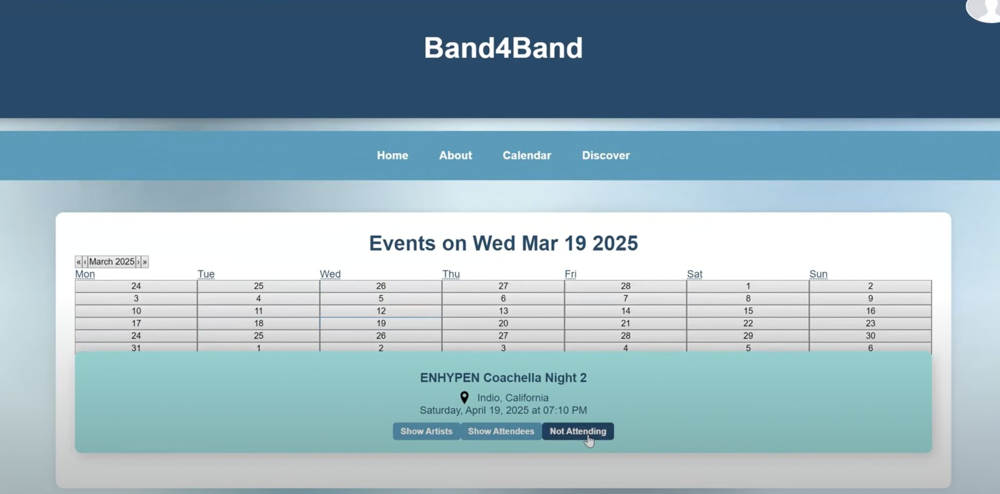
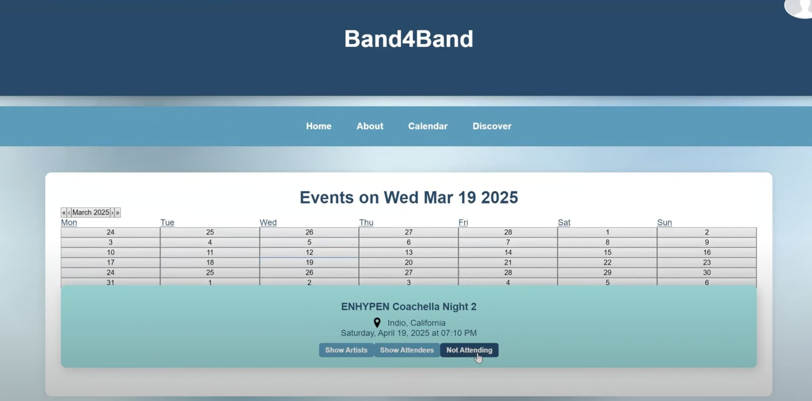

Joseph Odetayo
Hey! my name is Joseph and I'm an aspiring UX designer at Northeastern University! 😁
About Me
My Work

Band4Band
Social media platform connecting artists and live music lovers

Soundry Community
Community platform design for music producers to share work and get feedback


.jpg)


Let's Connect
Band4Band
A platform connecting artists and music lovers, built through Oasis at Northeastern. it includes event management, artist profiles, social following, and a master calendar with genre filtering.

 

Project Overview & Role
Band4Band addresses the need for better connections between local artists and music lovers.
My contributions included designing the Band4Band logo, improving visuals throughout the interface, and assisting with other frontend development tasks. This collaborative approach helped me to support the team across different areas while also gaining exposure to full-stack development.
Key Features Implemented
Built a comprehensive event posting system for artists, social following functionality, and a calendar interface with filtering capabilities. The platform supports different user types (artists vs listeners) with role-based access control.
Technical Learning & Teamwork
Gained exposure to Supabase and full-stack development workflows while working with a 6-person team. Learned to adapt between design and development tasks as needed, practicing version control and agile collaboration methods.
This project taught me how visual design decisions impact technical implementation and reinforced the importance of clear communication in team environments.
Soundry Community
Community platform design for music producers to share work, get feedback, and build meaningful connections. Led UX research and iterative design process for Soundry AI's 900+ user community.


Problem & Research
We partnered directly with Soundry AI to solve a business challenge: their Discord community of 900+ music producers had minimal engagement, with users sharing work but receiving little feedback. I worked with comprehensive user research and conducted in-depth interviews with music producers to find out the root causes of disengagement and identify opportunities for meaningful connection.
Design Process
Used a data-driven design approach starting with extensive user research. We used affinity mapping, persona development, and task analysis. We also translated research insights into wireframes and high-fidelity prototypes in Figma, and orchestrated multiple rounds of heuristic evaluations, expert reviews, and user feedback sessions, iterating rapidly based on findings to optimize the user's experience.
Key Features Designed
We planned a three-pillar platform strategy: a Discovery engine for music exploration with interactive audio visualizers, a Community Help system for peer-to-peer production assistance, and an intuitive Share interface for both music publishing and help requests. we also fovused on a unified content management system that solved the major pain point of scattered user content.
Results & Impact
We delivered great results: 100% task completion rate across all usability scenarios with 8 diverse participants, averaging 4.6/5 satisfaction scores. Most significantly, users completed tasks faster than our benchmarks, showing the intuitive design success we achieved. My platform design directly addressed Soundry AI's engagement challenges through evidence-based UX solutions.
Brand Animation Pack
A collection of animated logos and motion graphics created for social media campaigns and brand presentations, showcasing smooth transitions and engaging visual storytelling.
Animation screenshots and GIFs go here
Creative Process
Developed a series of brand animations focusing on clean typography, smooth transitions, and engaging visual effects that capture attention in social media feeds.
Technical Skills Applied
Utilized After Effects for keyframe animation, motion tracking, and effects composition. Applied principles of motion design including easing curves, anticipation, and follow-through to create professional-quality animations.